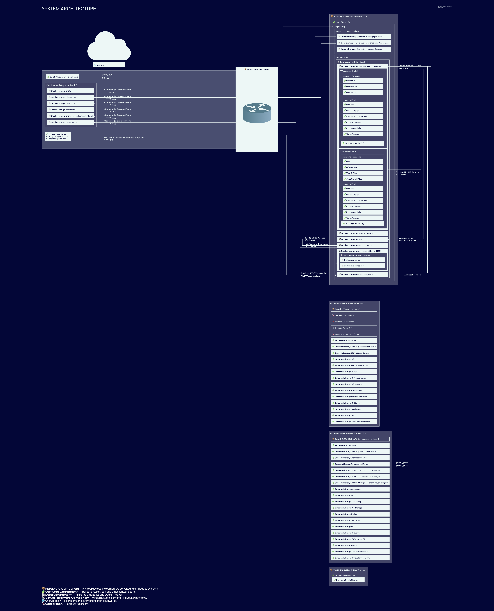

System Architecture
Introduction
This document provides an overview of the system structure, including hardware, software, databases, and network components. It illustrates how these elements interact and communicate.
System Architecture Diagram (SAD#01 - SAD#16)

{kind=link}
Legend (SAD#05)
The following symbols are used in the diagram:
- 📦 Hardware Component – Physical devices like computers, servers, and embedded systems.
- 🧩 Software Component – Applications, services, and other software parts.
- 📄 Data Component – Things like databases and Docker images.
- 📡 Virtual Hardware Component – Virtual network elements like Docker networks.
- 🌐 Cloud Icon – Represents the Internet or external networks.
- 🌡️ Sensor Icon – Represents sensors.
Components Overview
Embedded Systems (SAD#06)
- 📦 Hardware Component
- Includes IoT devices such as ESP32, Raspberry Pi, or similar microcontrollers.
- Communicates with the Host System or Cloud via MQTT, HTTP, or WebSockets.
Webserver (iot-nginx and iot-nginx-dev) (SAD#07)
- 🧩 Software Component
- Serves the frontend and backend.
- Handles API requests (
/api/) and forwards them toiot-phpandiot-php-devusing FastCGI (Port 9000). - Routes
/phpmyadmin/toiot-phpmyadmin. - Uses Vite for hot-reloading in development.
- Uses Pushstream Websockets for direct communications with frontend and hardware.
Database System (MariaDB) (SAD#08)
- 📄 Data Component
- Runs inside
iot-mariadbcontainer. - Contains two databases:
- atmos
- atmos_dev
- Used by the backend (
iot-php) via MySQL (Port 3306).
Docker Registry (Local and docker.io) (SAD#09)
- 📄 Data Component
- Stores public and local Docker images:
php:8.1-fpmmhart/alpine-nodemariadb:latestnode:latestphpmyadmin/phpmyadmin:latestnginx:1.24.0php-custom(extendsphp:8.1-fpm)tunnel-custom(extendsmhart/alpine-node)nginx-custom(extendsnginx:1.24.0)
Docker Host (SAD#10)
- 📡 Virtual Hardware Component
- Runs multiple Docker containers within the iot_default network.
- Key services:
iot-nginx– Webserver (Reverse Proxy)iot-php– Backend API (PHP-FPM)iot-mariadb– Database (MariaDB)phpmyadmin– Database Management Tooliot-tunnel– Public exposure (Localtunnel / SSH-Tunnel)- Development environment:
iot-vite– Frontend Development Server (hot-reloading)
Host System (MacBook Pro) (SAD#11)
- 📦 Hardware Component
- Runs macOS and serves as the primary development environment.
- Manages Docker containers and connects to GitLab Repository.
Mobile Device (External System) (SAD#12)
- 📦 Hardware Component
- Connects to
localtunnel servervia HTTPS to access the frontend. - Uses Google Chrome on an iPad Air (2022, iOS).
Network Access Point (SAD#13)
- 📦 Stable Network Router
- Represents the Router Access Point.
- Connects the Host System, Mobile Device, and Embedded Systems to the Internet/Intranet (SAD#15).
Gitlab repository (SAD#14)
- 📦 Gitlab repository
- Allows push and pull to gitlab via SSL.
Internet/Intranet (SAD#15)
- 🌐 Internet/Intranet
- Different Network abstractions allowing access over the Internet.
- Provides access to external services:
Localtunnel (SAD#16) (We don't have an SSH Tunnel?)
- 🧩 Localtunnel server and 🧩 Localtunnel Client
- LocalTunnel – Cloud endpoint
- LocalTunnel – Runs locally in Docker
- Allows Direct communication over HTTPS and HTTP to the Services.
- Serves Serve Nginx via Tunnel on port 80
Communication Flow Overview (SAD#04)
| Source | Destination | Protocol | Port | Purpose |
|---|---|---|---|---|
| Host Repository | GitLab Repository | SSH | 22 | Push Code |
| GitLab Repository | Host Repository | SSH | 22 | Pull Code |
| Mobile Device: Browser | LocalTunnel Server | HTTPS | 443 | Public Access to Local Services |
| Embedded System Reader | LocalTunnel Server | HTTPS | 443 | Fetch from Public Tunnel (Client.cpp) |
| Embedded System Installation | LocalTunnel Server | HTTPS | 443 | Fetch from Public Tunnel (Client.cpp) |
| iot-nginx | Embedded System Installation | HTTPS | 443 | Server Push (PushStream) |
| LocalTunnel Server | LocalTunnel Client | Persistent TLS WebSocket | 443 | Tunnel Transport Layer |
| LocalTunnel Client | iot-nginx | HTTP | 80 | Serve Nginx via Tunnel |
| iot-nginx | iot-php | FastCGI | 9000 | API Backend (Prod) |
| iot-php | iot-mariadb | MySQL | 3306 | Database Access (Prod) |
| iot-phpmyadmin | iot-mariadb | MySQL | 3306 | Admin UI DB Access |
| Docker Host | Docker Registry (remote) | HTTPS | 443 | Admin UI DB Access |
| Docker Host | Docker Registry (local) | HTTPS | 443 | Pull/push custom local images |
| LocalTunnel Client | LocalTunnel Server | WebSocket Push (TLS) | 443 | Push updates through tunnel (return) |